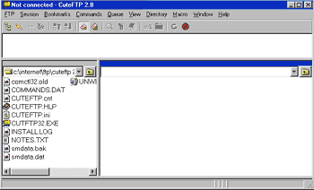
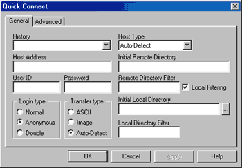

Web Site Replicator v1.0
Created by Lv 'Zetalog' Zheng of eZyScripts.Com
FTP Tutorial - Introduction
This tutorial will explain how to manage and maintain the files on your web server using File Transfer Protocol (FTP).
For this tutorial, we will be using the FTP client, CuteFTP 2.8. If you do not already have CuteFTP installed
on your computer, you may download the shareware version for free by clicking here.
By now, you should have CuteFTP 2.8 downloaded and installed on your computer, right? OK, launch the CuteFTP program.
A dialog box titled "FTP Site Manager" will pop up. Exit out of that screen by clicking on the Exit button in the bottom
right hand corner. You should now be at a screen that looks something like this:

Well, lets jump right in and connect to your web server. In the toolbar at the top, the second button from the left should look
like right? This button is called the "Quick Connect
Button". Click on the button, and a dialog box should pop up which looks like this:

First, fill in the Host Address box with the IP address of your web server, or your domain name. Next, fill in the User ID and Password boxes with
the username and password which you use for your web server. Once you've done that, click on the OK button at the bottom of the dialog box to connect to your web server.
Next >